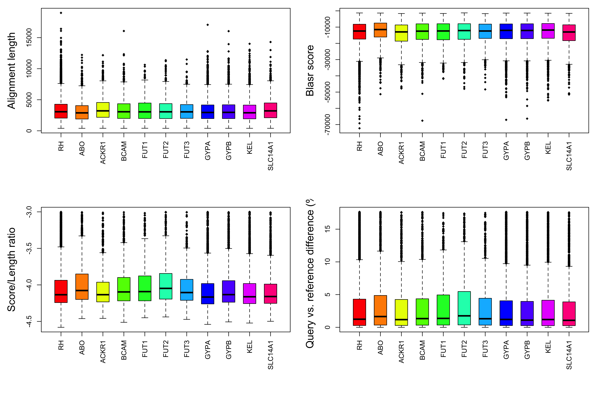

This procedure summarizes the Blasr alignment of PacBio subreads to targeted regions.
Genotyping of RH genes
PacBio technology was used to run whole genome sequencing while designed 25-mer primers were used to enrich 2 RH genes and 10 other genes.
Summary of subread alignment of 12 targeted genes in 11 targeted regions
Overall summary of subread alignment.
Table 1. Summary of alignment within targeted regions: location and length of targets; total number of alignment by all subreads; number of alignment after filtering; number of primary alignment after filtering; number of primary long alignment (>=5000 bases); number of unique full reads; average length of alignment; and average Blasr score of alignment. Alignment filtering was performed based on the following strategy:
| chr | start | end | length | total | filtered | primary | long | fullread | mean_length | mean_score | |
|---|---|---|---|---|---|---|---|---|---|---|---|
| RH | chr1 | 25258883 | 25434470 | 175588 | 95921 | 85912 | 85093 | 12865 | 19836 | 3332 | -13524 |
| ABO | chr9 | 133240400 | 133285210 | 44811 | 10994 | 9510 | 9509 | 1386 | 2305 | 3233 | -12908 |
| ACKR1 | chr1 | 159193310 | 159216500 | 23191 | 7129 | 6356 | 6353 | 1295 | 1598 | 3558 | -14474 |
| BCAM | chr19 | 44799059 | 44831420 | 32362 | 6961 | 6013 | 6011 | 836 | 1357 | 3176 | -12739 |
| FUT1 | chr19 | 48738011 | 48765390 | 27380 | 3920 | 3405 | 3404 | 547 | 792 | 3374 | -13598 |
| FUT2 | chr19 | 48685971 | 48715950 | 29980 | 4117 | 3653 | 3653 | 641 | 926 | 3452 | -13753 |
| FUT3 | chr19 | 5832888 | 5861474 | 28587 | 4064 | 3719 | 3719 | 585 | 911 | 3391 | -13693 |
| GYPA | chr4 | 144099300 | 144150750 | 51451 | 23230 | 20893 | 20890 | 3339 | 5018 | 3344 | -13704 |
| GYPB | chr4 | 143986100 | 144029340 | 43241 | 19225 | 17265 | 17257 | 2676 | 4198 | 3363 | -13717 |
| KEL | chr7 | 142931110 | 142972420 | 41311 | 25243 | 22499 | 22496 | 3085 | 5328 | 3207 | -13129 |
| SLC14A1 | chr18 | 45714127 | 45762520 | 48394 | 11858 | 10530 | 10526 | 1953 | 2548 | 3469 | -14180 |
Due to palindromes, only one alignment should be selected for each full read. The alignment can be selected based on one of the following statistics:

Figure 1. The alignment having the lowest percentage difference of alignment length between query and reference was selected for each full read. The statistics of selected alignment are summarized in the figure, and compared between targeted regions.
Table 2. This table summarizes the averages of all full reads aligned to targeted regions. The first column is the number of alignments per full read. The following 4 columns are the average of 4 statistics: alignment length, Blasr score, score/length ratio, and query vs. reference length difference. The next 4 columns are the best of the same statistics. The last 4 columns are the same statistics of the selected alignment of all full reads.
| Target | count | all_len | all_score | all_ratio | all_diff | best_len | best_score | best_ratio | best_diff | sel_len | sel_score | sel_ratio | sel_diff |
|---|---|---|---|---|---|---|---|---|---|---|---|---|---|
| RH | 4.3 | 3311.8 | -13284.9 | -4.0 | 3.9 | 3612.6 | -14529.2 | -4.1 | 3.0 | 3316.2 | -13472.7 | -4.1 | 3.0 |
| ABO | 4.1 | 3171.8 | -12540.2 | -3.9 | 4.3 | 3457.0 | -13727.3 | -4.1 | 3.3 | 3142.5 | -12572.9 | -4.0 | 3.3 |
| ACKR1 | 4.0 | 3492.5 | -14043.0 | -4.0 | 3.9 | 3796.8 | -15369.6 | -4.1 | 3.0 | 3504.6 | -14258.1 | -4.1 | 3.0 |
| BCAM | 4.4 | 3386.3 | -13438.8 | -4.0 | 4.0 | 3763.2 | -14938.5 | -4.1 | 3.1 | 3363.7 | -13539.4 | -4.0 | 3.1 |
| FUT1 | 4.3 | 3328.2 | -13197.4 | -4.0 | 4.2 | 3599.9 | -14343.2 | -4.1 | 3.4 | 3334.2 | -13390.2 | -4.0 | 3.4 |
| FUT2 | 3.9 | 3337.8 | -13145.1 | -3.9 | 4.4 | 3673.8 | -14380.6 | -4.0 | 3.5 | 3340.2 | -13329.4 | -4.0 | 3.5 |
| FUT3 | 4.1 | 3285.4 | -13110.8 | -4.0 | 3.9 | 3588.0 | -14319.6 | -4.1 | 3.1 | 3273.2 | -13215.0 | -4.0 | 3.1 |
| GYPA | 4.2 | 3232.8 | -13093.3 | -4.0 | 3.9 | 3498.0 | -14267.8 | -4.1 | 3.0 | 3232.8 | -13258.4 | -4.1 | 3.0 |
| GYPB | 4.1 | 3250.5 | -13062.5 | -4.0 | 3.8 | 3506.8 | -14195.2 | -4.1 | 3.0 | 3252.2 | -13216.8 | -4.1 | 3.0 |
| KEL | 4.2 | 3154.1 | -12744.6 | -4.0 | 3.9 | 3429.6 | -13941.5 | -4.1 | 3.0 | 3162.8 | -12929.6 | -4.1 | 3.0 |
| SLC14A1 | 4.1 | 3443.1 | -13907.9 | -4.0 | 3.8 | 3751.7 | -15244.9 | -4.1 | 2.9 | 3438.1 | -14061.8 | -4.1 | 2.9 |
When the same full read has multiple alignments to the same location on reference sequence, it is assumed to be caused by palindrome repeats. This section summarizes the frequency of palindromes, in relationship to alignment length.
Table 3. Number of total full reads and full reads with given number of palindrome repeats per targeted region.
| Target | Total | Num>=1 | Num>=2 | Num>=3 | Num>=6 | Num>=12 | Num>=12&Long |
|---|---|---|---|---|---|---|---|
| RH | 19836 | 19836 | 12391 | 8495 | 4009 | 1157 | 137 |
| ABO | 2305 | 2305 | 1489 | 1047 | 508 | 122 | 18 |
| ACKR1 | 1598 | 1598 | 1006 | 704 | 299 | 84 | 14 |
| BCAM | 1357 | 1357 | 838 | 578 | 267 | 81 | 6 |
| FUT1 | 792 | 792 | 482 | 344 | 179 | 54 | 7 |
| FUT2 | 926 | 926 | 540 | 388 | 183 | 48 | 6 |
| FUT3 | 911 | 911 | 583 | 410 | 192 | 50 | 7 |
| GYPA | 5018 | 5018 | 3298 | 2271 | 1082 | 291 | 42 |
| GYPB | 4198 | 4198 | 2706 | 1915 | 901 | 256 | 39 |
| KEL | 5328 | 5328 | 3404 | 2407 | 1109 | 331 | 38 |
| SLC14A1 | 2548 | 2548 | 1714 | 1178 | 499 | 138 | 19 |
Sequencing coverage of targeted regions via selected alignment of all full reads.
Table 4. The first 2 columns are the average coverage of targeted regions using all selected alignment and long selected alignment (5000 bases or more) of all full reads. The following columns are the percentage of targeted regions with given sequencing coverage. Click links to view landscape of coverage.
| Target | Mean_All | Mean_Long | Dep>=1 | Dep>=3 | Dep>=6 | Dep>=10 | Dep>=20 | Dep>=30 | Dep>=60 | Dep>=120 |
|---|---|---|---|---|---|---|---|---|---|---|
| RH | 370.9885 | 111.4466 | 100 | 100 | 100 | 100 | 100.0000 | 100.0000 | 100.0000 | 97.1558 |
| ABO | 148.7849 | 38.5544 | 100 | 100 | 100 | 100 | 100.0000 | 100.0000 | 97.1369 | 53.6118 |
| ACKR1 | 210.7180 | 68.5504 | 100 | 100 | 100 | 100 | 100.0000 | 100.0000 | 100.0000 | 100.0000 |
| BCAM | 125.0967 | 38.6108 | 100 | 100 | 100 | 100 | 98.7547 | 97.3827 | 84.7475 | 49.7435 |
| FUT1 | 81.2291 | 23.1905 | 100 | 100 | 100 | 100 | 100.0000 | 94.5727 | 75.4456 | 15.1570 |
| FUT2 | 93.8641 | 28.7268 | 100 | 100 | 100 | 100 | 100.0000 | 100.0000 | 91.5977 | 23.0821 |
| FUT3 | 93.1514 | 24.3088 | 100 | 100 | 100 | 100 | 100.0000 | 100.0000 | 69.1083 | 26.8898 |
| GYPA | 300.2858 | 86.9932 | 100 | 100 | 100 | 100 | 100.0000 | 100.0000 | 100.0000 | 100.0000 |
| GYPB | 286.6534 | 81.7975 | 100 | 100 | 100 | 100 | 100.0000 | 100.0000 | 100.0000 | 100.0000 |
| KEL | 388.2747 | 100.2291 | 100 | 100 | 100 | 100 | 100.0000 | 100.0000 | 100.0000 | 100.0000 |
| SLC14A1 | 167.5854 | 53.6360 | 100 | 100 | 100 | 100 | 100.0000 | 100.0000 | 97.7787 | 92.0176 |
Check out the RoCA home page for more information.
To reproduce this report:
Find the data analysis template you want to use and an example of its pairing YAML file here and download the YAML example to your working directory
To generate a new report using your own input data and parameter, edit the following items in the YAML file:
Run the code below within R Console or RStudio, preferablly with a new R session:
if (!require(devtools)) { install.packages('devtools'); require(devtools); }
if (!require(RCurl)) { install.packages('RCurl'); require(RCurl); }
if (!require(RoCA)) { install_github('zhezhangsh/RoCAR'); require(RoCA); }
CreateReport(filename.yaml); # filename.yaml is the YAML file you just downloaded and editedIf there is no complaint, go to the output folder and open the index.html file to view report.
## R version 3.5.1 (2018-07-02)
## Platform: x86_64-apple-darwin15.6.0 (64-bit)
## Running under: macOS High Sierra 10.13.6
##
## Matrix products: default
## BLAS: /System/Library/Frameworks/Accelerate.framework/Versions/A/Frameworks/vecLib.framework/Versions/A/libBLAS.dylib
## LAPACK: /Library/Frameworks/R.framework/Versions/3.5/Resources/lib/libRlapack.dylib
##
## locale:
## [1] en_US.UTF-8/en_US.UTF-8/en_US.UTF-8/C/en_US.UTF-8/en_US.UTF-8
##
## attached base packages:
## [1] stats4 parallel stats graphics grDevices utils datasets
## [8] methods base
##
## other attached packages:
## [1] GenomicRanges_1.34.0 GenomeInfoDb_1.18.1 Biostrings_2.50.1
## [4] XVector_0.22.0 IRanges_2.16.0 S4Vectors_0.20.1
## [7] BiocGenerics_0.28.0 htmlwidgets_1.3 DT_0.5
## [10] kableExtra_0.9.0 awsomics_0.0.0.9000 yaml_2.2.0
## [13] rmarkdown_1.10 knitr_1.20 RoCA_0.0.0.9000
## [16] RCurl_1.95-4.11 bitops_1.0-6 usethis_1.4.0
## [19] devtools_2.0.1
##
## loaded via a namespace (and not attached):
## [1] Rcpp_1.0.0 prettyunits_1.0.2 ps_1.2.1
## [4] assertthat_0.2.0 rprojroot_1.3-2 digest_0.6.18
## [7] mime_0.6 R6_2.3.0 backports_1.1.2
## [10] evaluate_0.12 httr_1.3.1 highr_0.7
## [13] pillar_1.3.0 zlibbioc_1.28.0 rlang_0.4.0
## [16] rstudioapi_0.8 callr_3.0.0 desc_1.2.0
## [19] readr_1.3.1 stringr_1.3.1 munsell_0.5.0
## [22] shiny_1.2.0 compiler_3.5.1 httpuv_1.4.5
## [25] pkgconfig_2.0.2 base64enc_0.1-3 pkgbuild_1.0.2
## [28] htmltools_0.3.6 tibble_1.4.2 GenomeInfoDbData_1.2.0
## [31] viridisLite_0.3.0 crayon_1.3.4 withr_2.1.2
## [34] later_0.7.5 jsonlite_1.5 xtable_1.8-3
## [37] magrittr_1.5 scales_1.0.0 cli_1.0.1
## [40] stringi_1.2.4 fs_1.2.6 promises_1.0.1
## [43] remotes_2.0.2 testthat_2.2.1 xml2_1.2.0
## [46] tools_3.5.1 glue_1.3.0 hms_0.4.2
## [49] crosstalk_1.0.0 processx_3.2.0 pkgload_1.0.2
## [52] colorspace_1.3-2 sessioninfo_1.1.1 rvest_0.3.2
## [55] memoise_1.1.0END OF DOCUMENT
{kind=link}
{kind=link}
{kind=link}
{kind=link}
{kind=link}
{kind=link}
{kind=link}
{kind=link}
{kind=link}
{kind=link}
{kind=link}
{kind=link}
{kind=link}
{kind=link}
{kind=link}
{kind=link}
{kind=link}
{kind=link}
{kind=link}
{kind=link}
{kind=link}
{kind=link}